ingredients and steps
1) Brown the chopped garlic cloves and the sliced onions in a little olive oil.
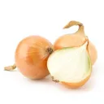
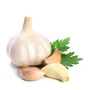
2) Add the carrot and the celery stalk, then the meat and brown everything
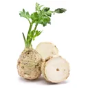
3)Add the tomato puree, water and herbs. Season with salt and pepper, then simmer over low heat for 45 minutes.
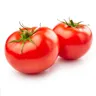


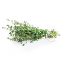
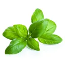
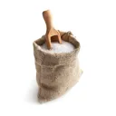
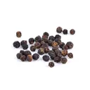
4) Prepare the bechamel sauce: melt the butter, off the heat and add the flour all at once.
5) Return to the heat and stir with a whisk until a smooth mixture is obtained, gradually add the milk, stir constantly, until the mixture thickens.
Enjoy your meal !
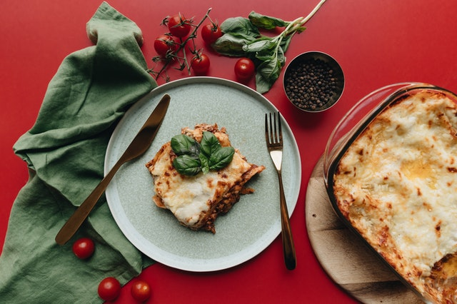
6) Then season with nutmeg, salt and pepper. Cook for about 5 minutes, over very low heat, while stirring.
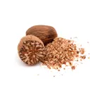
7) Preheat the oven to 200 ° C (thermostat 6-7). Oil the lasagna dish. Place a thin layer of béchamel then lasagna sheets, bolognese, béchamel and Parmesan. Repeat the operation 3 times in a row,On the last layer of lasagna, put only the béchamel and cover with grated cheese. Sprinkle a few knobs of butter.Bake for about 25 minutes of cooking
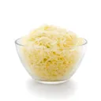
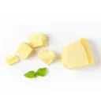